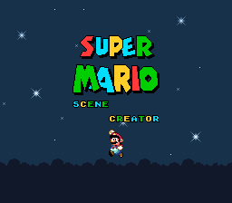
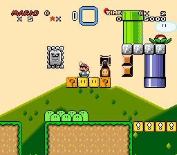
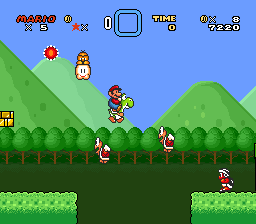

This hack lets you play through several short levels within one level based on various old Mario scene creators from back in the day, including their specific looks.
Some assets pulled from SMW Central.
 .bps patch file (292 KB)
.bps patch file (292 KB)

